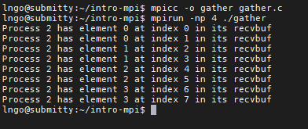

MPI: Functional parallelism and collectives
Contents
MPI: Functional parallelism and collectives#
1. Collective communication#
Must involve ALL processes within the scope of a communicator.
Unexpected behavior, including programming failure, if even one process does not participate.
Types of collective communications:
Synchronization: barrier
Data movement: broadcast, scatter/gather
Collective computation (aggregate data to perform computation): Reduce
{kind=link}
2. Hands-on: MPI_Bcast#
int MPI_Bcast(void *buf, int count, MPI_Datatype datatype, int root, MPI_Comm comm)*buf:If on
root, pointer to the address containing the data elements to be broadcastedIf not on
root, pointer to the address where broadcasted data to be stored.
count: how many data elements will be broadcasted.MPI_Datatype:MPI_BYTE,MPI_PACKED,MPI_CHAR,MPI_SHORT,MPI_INT,MPI_LONG,MPI_FLOAT,MPI_DOUBLE,MPI_LONG_DOUBLE,MPI_UNSIGNED_CHAR, and other user-defined types.root: rank of the process where the original data will be broadcasted.tag: an integer identify the message. Programmer is responsible for managing tag.comm: communicator (typically just used MPI_COMM_WORLD)
Don’t need to specify a TAG or DESTINATION
Must specify the SENDER (root)
Blocking call for all processes
Inside
intro-mpi, create a file namedbcast.cwith the following contents
Compile and run
bcast.c:
$ mpicc -o bcast bcast.c
$ mpirun -np 4 ./bcast
{: .language-bash}
{kind=link}
3. Hands-on: MPI_Scatter#
int MPI_Scatter(void *sendbuf, int sendcount, MPI_Datatype sendtype, void *recvbuf,int recvcount,MPI_Datatype recvtype, int root, MPI_Comm comm)*sendbuf: pointer to the address containing the array of data elements to be scattered.sendcount: how many data elements to be sent to each process of the communicator.*recvbuf: pointer to the address on each process of the communicator, where the scattered portion will be written.recvcount: how many data elements to be received by each process of the communicator.root: rank of the process from where the original data will be scattered.comm: communicator (typically just used MPI_COMM_WORLD)
Inside
intro-mpi, create a file namedscatter.cwith the following contents
Compile and run
scatter.c:
$ mpicc -o scatter scatter.c
$ mpirun -np 4 ./scatter
{: .language-bash}
{kind=link}
4. Hands-on: MPI_Gather#
int MPI_Gather(void *sendbuf, int sendcount, MPI_Datatype sendtype, void *recvbuf,int recvcount,MPI_Datatype recvtype, int root, MPI_Comm comm)*sendbuf: pointer to the address on each process of the communicator, containing the array of data elements to be gathered.sendcount: how many data elements from each process of the communicator to be sent back to the root process.*recvbuf: pointer to the address on the root process where all gathered data will be written.recvcount: how many data elements to be received from each process of the communicator.root: rank of the process from where the original data will be gathered.comm: communicator (typically just used MPI_COMM_WORLD)
Inside
intro-mpi, create a file namedgather.cwith the following contents
Compile and run
gather.c:
$ mpicc -o gather gather.c
$ mpirun -np 4 ./gather
{: .language-bash}
{kind=link}
5. Hands-on: MPI_Reduce#
int MPI_Reduce(void *sendbuf, void *recvbuf, int count, MPI_Datatype datatype, MPI_OP op,int root, MPI_Comm comm)*sendbuf: pointer to the address on each process of the communicator, containing the array of data elements to be reduced.*recvbuf: pointer to the address on the root process where all final reduced data will be written.count: how many data elements to be received from each process of the communicator. If count > 1, then operation is performed element-wise.op: may be MPI_MIN, MPI_MAX, MPI_SUM, MPI_PROD (twelve total). Programmer may add operations, must be commutative and associative.root: rank of the process from where the original data will be gathered.comm: communicator (typically just used MPI_COMM_WORLD).
Inside
intro-mpi, create a file namedgather.cwith the following contents
Compile and run
reduce.c:
$ mpicc -o reduce reduce.c
$ mpirun -np 4 ./reduce
{: .language-bash}
{kind=link}